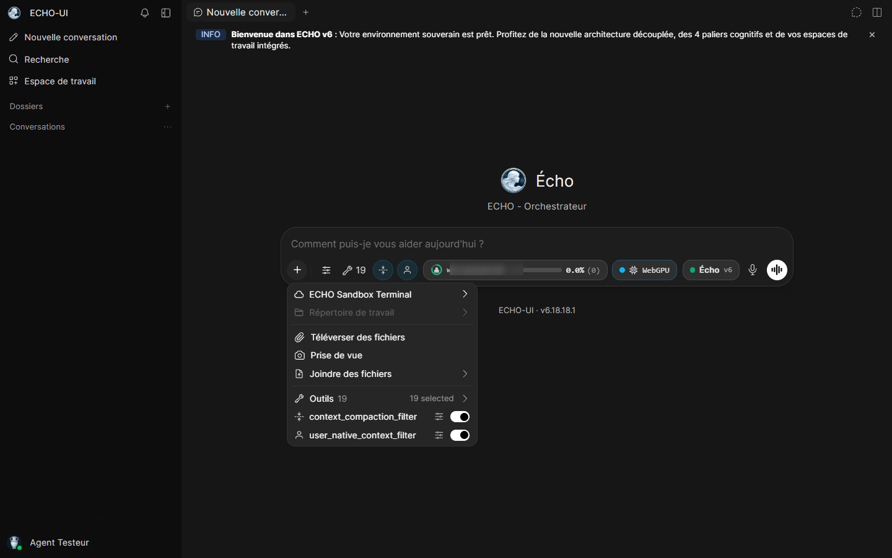

9. L'Arsenal des Outils
Pourquoi des outils spécialisés ?
Un modèle de langage seul ne peut ni vérifier une page Web publiée ce matin, ni exécuter un calcul Python exact, ni consulter votre agenda ou vos fichiers locaux. L'Arsenal d'ECHO met à disposition 87 actions spécialisées réparties en 19 boîtes d'outils, afin que l'assistant agisse sur des faits vérifiés plutôt que de supposer une réponse.
Vous n'avez pas besoin de connaître le nom technique d'un outil pour en bénéficier : formulez simplement votre demande en langage naturel. L'orchestrateur sélectionne automatiquement les outils pertinents et en exécute jusqu'à cinq en parallèle au cours d'un même tour lorsque les tâches sont indépendantes (par exemple, consulter plusieurs fichiers ou comparer deux sources simultanément).

Accès aux contrôles et filtres depuis le menu de la barre de saisie dans ECHO-UI.
1. Cartographie des capacités disponibles
Les 19 domaines de l'Arsenal couvrent cinq grands axes d'action. Les chapitres suivants détaillent chacun d'eux du point de vue pratique.
| Besoin utilisateur | Capacités mobilisées | Résultat obtenu | Chapitre dédié |
|---|---|---|---|
| Organiser un projet complexe ou lancer un calcul / une application | Planification structurée, tâches suivies, exécution isolée de code, accès serveur distant, agenda et automatisations | Plan validé avant action, exécution sécurisée, vue interactive dans l'onglet Applications, tâches planifiées | 10. Planification & Exécution |
| Rechercher une information récente, explorer un site ou analyser un média lourd | Méta-recherche souveraine, recherche approfondie, navigateur autonome, lecture ciblée de vidéos/audio/PDF, cartes | Sources vérifiées, navigation visuelle en direct et clips d'action dans Navigateur Web, résumés horodatés | 11. Recherche & Navigation |
| Créer des schémas, générer des images et gérer des documents versionnés | Visualisations interactives (17 moteurs), génération et retouche d'images, gestionnaire de fichiers versionné | Graphiques interactifs, images retouchées par itérations, édition et historique dans Codex & Fichiers | 12. Édition & Visuel |
| Retrouver des échanges passés, mémoriser des règles ou exporter une session | Mémoire à long terme hiérarchisée, recherche sémantique dans les sessions, actions d'export et de transfert | Préférences durables, recherche par date ou par sens, migration vers une nouvelle conversation ou export PDF | 13. Mémoire & Actions |
| Déléguer des travaux complexes ou connecter des services externes | Sous-agents supervisés, conseils multi-experts, workflows automatisés, connecteurs cloud, coffre de secrets | Suivi en direct dans Sous-Agents & Outils, gestion sécurisée des accès dans Coffre & Identité | 14. Agents & Automatisation |
2. Comment ECHO garde des réponses rapides et précises
Manuels consultés à la demande
Plutôt que d'encombrer la mémoire de travail de l'assistant avec 87 notices techniques permanentes, un conseiller interne consulte l'un des 12 manuels opérationnels uniquement lorsqu'une procédure complexe ou une option de l'interface le requiert.
Lecture intelligente des sorties longues
Lorsqu'un outil renvoie un résultat massif (un long journal, une page complète ou une réponse d'API), ECHO conserve le fichier complet en réserve et présente d'abord un aperçu début/fin. Si votre demande exige l'intégralité du texte, l'assistant parcourt les pages manquantes tranche par tranche.
Parallélisme borné intra-tour
Pour éviter les boucles séquentielles lentes, l'assistant peut regrouper jusqu'à 5 appels d'outils indépendants dans le même tour (par exemple lire plusieurs documents ou interroger plusieurs services simultanément).
3. Garde-fous d'exécution et confidentialité
Actions protégées en mode délégué ou automatisé
Certaines actions sensibles (afficher une boîte de confirmation, supprimer une compétence, modifier vos identifiants dans le coffre ou lancer l'exécution d'un plan sans accord préalable) exigent votre validation directe dans la conversation principale. Lorsqu'un traitement s'exécute en arrière-plan (sous-agent ou automatisation programmée), ces opérations interactives sont bloquées par sécurité.
Règle d'inventaire préalable
Avant de modifier un document, un plan ou un fichier déposé, l'assistant vérifie systématiquement le registre de la session pour connaître l'état réel des ressources disponibles et distinguer celles de la branche active de celles issues d'une branche alternative conservée.
Dossier d'Ingénierie : Cartographie des 19 Modules (87 Outils), Décorateur @echo_tool &
Régimes de Délestage
1. Séparation Interface / Connaissance (12-owui-tools/ &
14-owui-libs/tool_guides/)
Les 87 méthodes publiques réparties dans les 19 modules Python de
12-owui-tools/ exposent des docstrings réduites à une phrase fonctionnelle pure, diminuant
d'environ 80 % l'empreinte du schéma OpenAPI envoyé au LLM. La documentation détaillée
(contrats
d'arguments, prérequis, gestion d'erreurs et guide ECHO-UI) est externalisée dans les 12 manuels
Markdown de 14-owui-libs/tool_guides/*.md, indexés par
EchoToolGuidesManager
(echo_tool_guides.py v6.24.0.1, invalidation par st_mtime_ns) et consultés par
tool_advisor (MODEL_APOLLO, override_thinking="medium").
Module (12-owui-tools/) |
Nb outils | Méthodes exposées | Manuel rattaché |
|---|---|---|---|
agent_engine_tool.py |
2 | delegate_to_agent, control_subagents |
agent_orchestration.md |
agent_orchestration_tool.py |
7 | consult_council, consult_phalanx, forge_skill,
list_skills, read_skill, search_skill,
delete_user_skill |
agent_orchestration.md |
delegate_to_data_broker.py |
1 | ask_data_broker |
agent_orchestration.md |
strategic_planner.py |
8 | build_plan, read_plan, update_plan, update_tasks,
process_plan, close_plan, delete_plan, analyze_plan
|
strategic_planner.md |
code_executor_tool.py |
3 | code_executor, control_sandbox_execution, manage_terminal |
code_and_files.md |
file_content_explorer.py |
6 | read_raw_file_content, semantic_probe, read_multimedia_file,
show_image_to_user, get_file_metadata, calculate_file_hashes |
code_and_files.md |
query_registry_tool.py |
1 | query_registry |
code_and_files.md |
echo_codex_tool.py |
14 | create_codex, read_codex, edit_codex, delete_codex,
create_codex_directory, move_codex, transfer_codex,
list_codex, list_other_chats_ids, search_codex,
history_codex, restore_codex, summarize_codex,
open_codex_ui |
codex_management.md |
sovereign_web_search.py |
3 | search_instant_answer, search_web, delegate_deep_research |
web_search_and_browsing.md |
navigation_engine_tool.py |
7 | delegate_web_browsing, analyze_web_page, archive_web_page,
web_browse_reset, get_browser_frames_history, retain_browser_frame,
open_browser_ui |
web_search_and_browsing.md |
gemini_maps_grounding.py |
1 | search_maps |
web_search_and_browsing.md |
universal_visual_generator.py |
3 | generate_rich_visualization, generate_image, close_image_session
|
visual_and_system_metrics.md |
context_gauge.py |
1 | get_context_load |
visual_and_system_metrics.md |
memory_and_rag_tool.py |
6 | update_meta_artifact, search_meta_artifacts,
delete_meta_artifact_item, save_session_context,
delete_session_context_source, search_sessions_context |
memory_and_rag.md |
n8n_orchestrator_tool.py |
5 | manage_n8n_template, manage_n8n_workflow, n8n_hub,
query_n8n_documentation, delegate_to_n8n_grapher |
n8n_workflows.md |
echo_mcp_tool.py |
3 | list_mcp_functions, call_mcp_function, upload_file_to_drive |
identity_and_api_mcp.md |
identity_vault_tool.py |
3 | list_identities_services, list_identities, manage_identity |
identity_and_api_mcp.md |
api_client.py |
1 | call_api (garde SSRF is_safe_public_url, plafond 5 Mo) |
identity_and_api_mcp.md |
generalist_tools.py |
12 | ask_user_input, wait_timer, list_ui_folders,
list_ui_tags, list_ui_chats, read_ui_chat_transcript,
manage_ui_calendar, manage_ui_automations, manage_ui_tasks,
read_tool_output, delete_tool_output, tool_advisor |
ui_calendar_and_automations.md (+ echo_ui_guide.md,
ui_conversations.md) |
2. Décorateur @echo_tool, Contextes & Parallélisme
- Standardisation
@echo_tool(echo_core.pyv6.23.10.1) : Compatibleasync defetdef, injecte__user__et__metadata__dans__signature__, pose le garde-fou anti-réentrance_ECHO_IN_TOOL_CALLet centralise le drainage AEC (_drain_tool_aec_eventsprotégé par_get_aec_drain_lock(chat_id)). - Propagation & Gardes Headless : Propage les
ContextVarECHO_SUBAGENT_CONTEXTetECHO_AUTOMATION_CONTEXT(avec reset garanti enfinally). La fonctionget_headless_block_reasonbloque en contexte sous-agent ou automatisation les appels interactifs et destructeurs (ask_user_input,process_plan(user_already_validated=False),manage_identity,delete_user_skill). - Listes Système Sous-Agents (
echo_constants.pyv6.24.0.1) :DELEGATE_AGENT_BLACKLISTinterdit aux sous-agents les outils récursifs/UI/long-terme (delegate_deep_research,delegate_to_n8n_grapher,ask_data_broker,control_subagents,ask_user_input,manage_ui_tasks,open_codex_ui,open_browser_ui,generate_rich_visualization,generate_image,close_image_session,show_image_to_user,delete_user_skill,manage_identity,update_meta_artifact,delete_meta_artifact_item). À l'inverse,DELEGATE_AGENT_SYSTEM_TOOLSgarantit l'accès àtool_advisor,read_tool_outputetdelete_tool_output. - Parallélisme Intra-Tour : Plafonné à
ECHO_MAX_PARALLEL_TOOLS_PER_TURN = 5dansopen_webui/utils/middleware.py(Phase A séquentielle de pré-validation, Phase Basyncio.gathersousasyncio.Semaphore(5)) ainsi que dansEchoAgentRunner.
3. Gouvernance de Délestage à 3 Régimes (apply_tool_spillover)
- Seuils SSOT (
get_tool_truncation_limit) :ECHO_TOOL_OUTPUT_PREVIEW_CHARS = 32 768caractères pour les sorties I/O brutes ;ECHO_COGNITIVE_OUTPUT_PREVIEW_CHARS = 524 288caractères pour les outils de distillation cognitive et les sous-agents (ECHO_COGNITIVE_DISTILLATION_TOOLS). - Exemption des Lecteurs Paginés (
ECHO_PAGINATED_READER_TOOLS) :read_tool_output,read_codex,read_raw_file_contentetdelete_tool_outputne subissent pas le délestage récursif. - Mécanisme : Hors contenus Base64 protégés, toute sortie dépassant le seuil est écrite dans
tools_output/{output_id}.txtavec retour structuré d'un aperçu Head+Tail aligné sur les lignes (output_id,total_chars,total_lines,omitted_lines_range). La relecture paginée s'effectue viaread_tool_output(paginate_lines_windowà800lignes /46 080octets max par appel, filtre regexsearch_patternà contexte ±2 lignes) puis suppression viadelete_tool_output.